The Celtic tree calendar: the 13 trees and Ogham letters of the Irish year
The Celtic tree calendar divides the year into 13 lunar months. Each month is named for a native Irish tree and an Ogham letter, the old Irish alphabet carved on standing stones. It is a cultural tradition grounded in Ogham lore and folklore, not science. Find the tree for your birth date below, or use the guardian tree finder.
Each tree can be sponsored as a native Irish tree planted in your name or as a gift: reserve a tree or sponsor one.
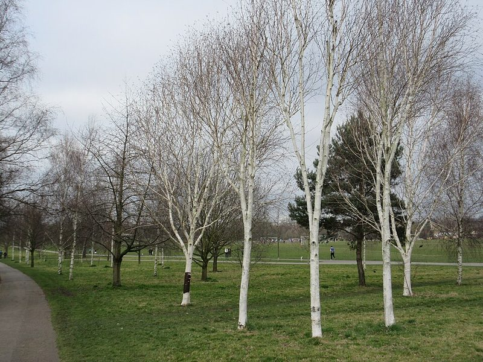
Birch · Beith
New Beginnings & Renewal · Dec 24 – Jan 20 · Ogham letter ᚁ (Beith)
Birch pioneers new ground with resilience, inspiring those born in deep midwinter to forge paths of hope.
Photo: David Anstiss, CC BY-SA 2.0

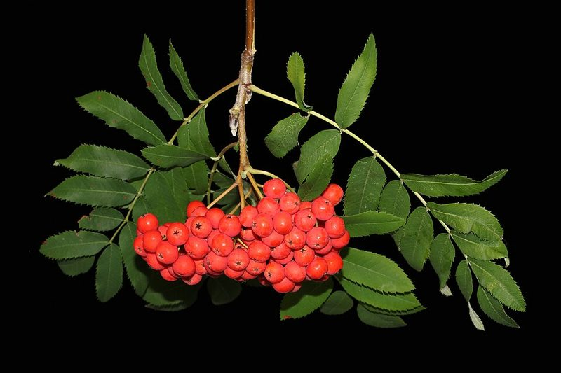
Rowan · Luis
Vision & Protection · Jan 21 – Feb 17 · Ogham letter ᚂ (Luis)
Rowan guards the flame of seasonal awakening, sparking artistic clarity and spiritual strength.
Photo: George Chernilevsky, CC BY-SA 4.0

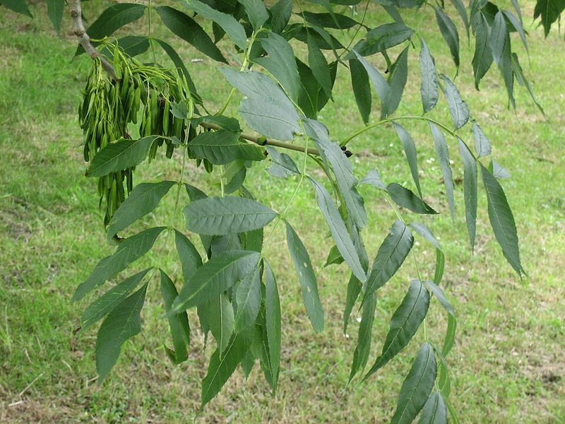
Ash · Nion
Spiritual Connection · Feb 18 – Mar 17 · Ogham letter ᚅ (Nion)
Rooted deep in sacred Irish soil, the ash bridges celestial wonder with grounded daily focus.
Photo: MPF (Wikimedia Commons), CC BY 2.5

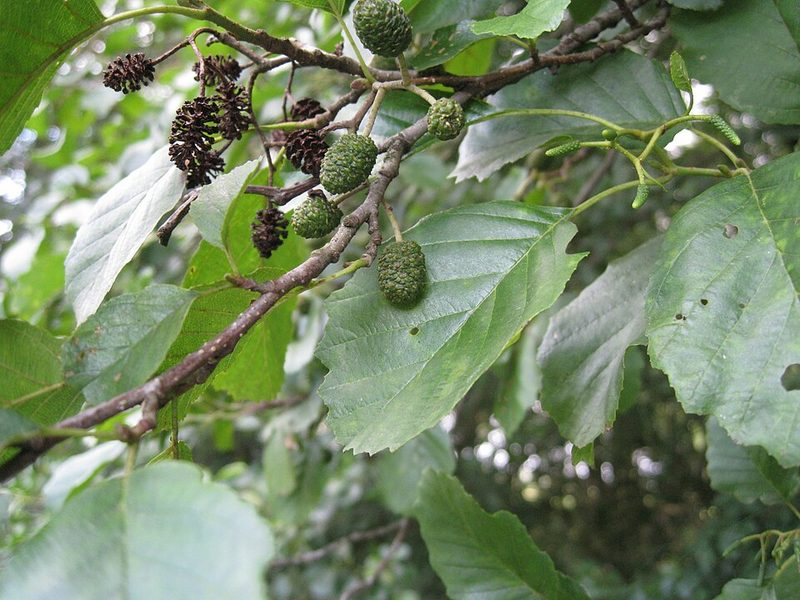
Alder · Fearn
Courage & Steadfastness · Mar 18 – Apr 14 · Ogham letter ᚃ (Fearn)
Resilient in wet soils, alder stands unwavering, lending steadfast leadership to early spring.
Photo: AEngelhardt, CC BY-SA 3.0
.jpg){kind=link}
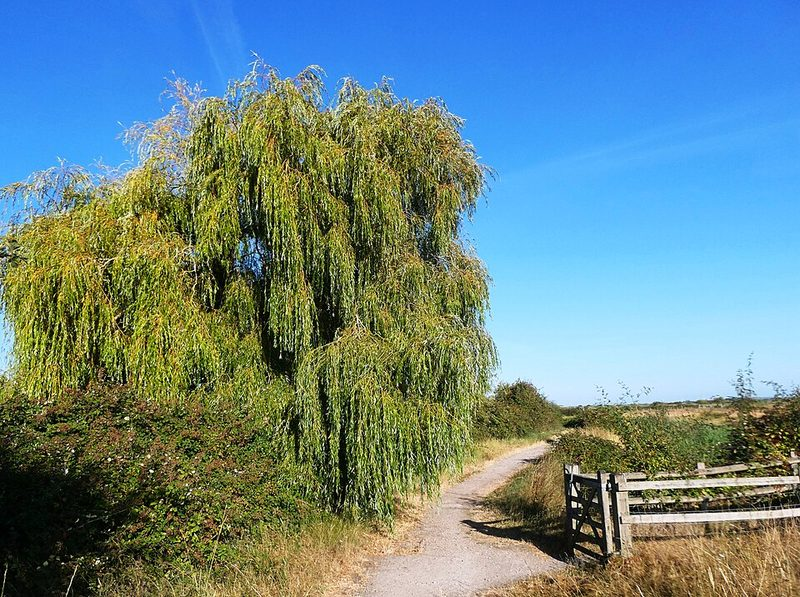
Willow · Saille
Intuition & Flexibility · Apr 15 – May 12 · Ogham letter ᚄ (Saille)
Closely bonded to water cycles, the willow guardian moves gracefully through life’s shifting seasons.
Photo: pam fray, CC BY-SA 2.0

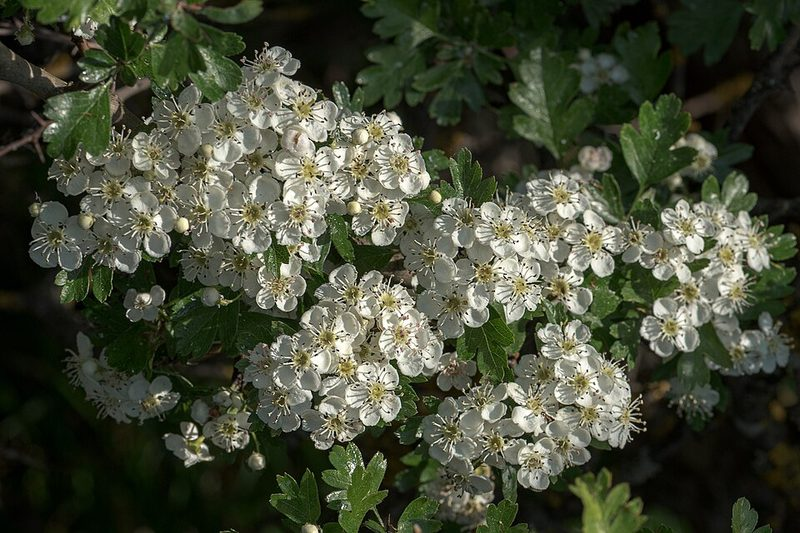
Hawthorn · Huath
Patience & Fairy Lore · May 13 – Jun 9 · Ogham letter ᚆ (Huath)
The fairy tree of Bealtaine embodies patience, guarded strength, and abundant bloom.
Photo: Flocci Nivis, CC BY 4.0

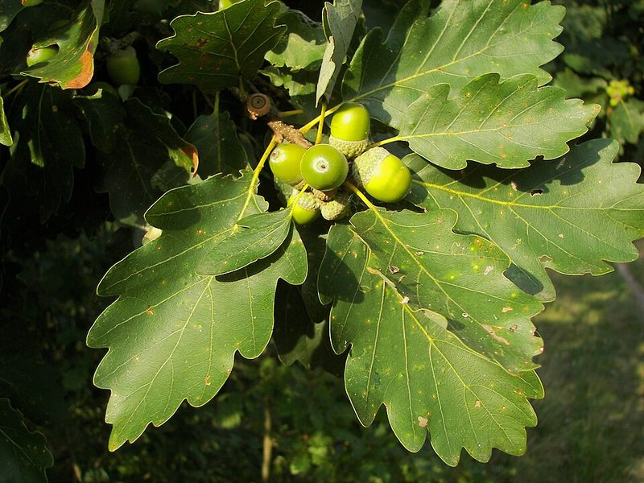
Oak · Duir
Strength & Sanctuary · Jun 10 – Jul 7 · Ogham letter ᚇ (Duir)
Mighty sovereign of the summer solstice, oak offers unwavering sanctuary, stamina, and enduring wisdom.
Photo: Nikanos (Wikimedia Commons), CC BY-SA 2.5

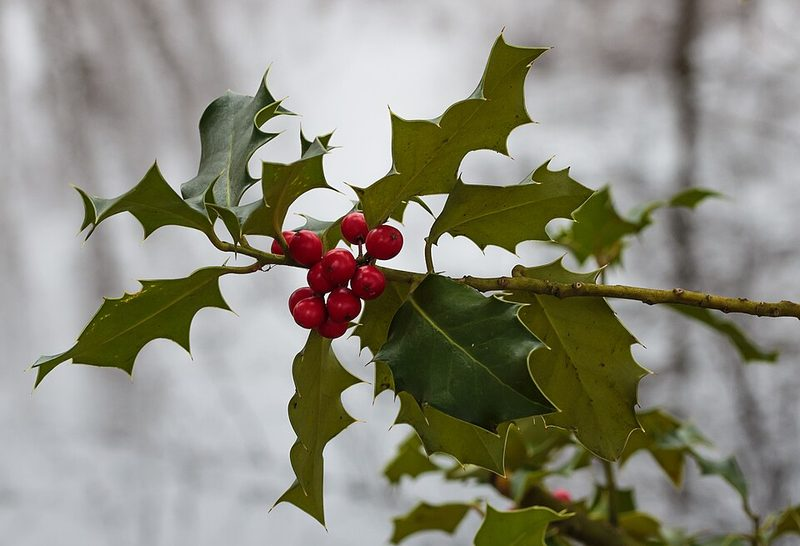
Holly · Tinne
Nobility & Resilience · Jul 8 – Aug 4 · Ogham letter ᚈ (Tinne)
Unyielding even in the harshest frost, holly champions noble intent and practical determination.
Photo: Dominicus Johannes Bergsma, CC BY-SA 4.0
._Locatie,_Jonkersvallei.jpg){kind=link}
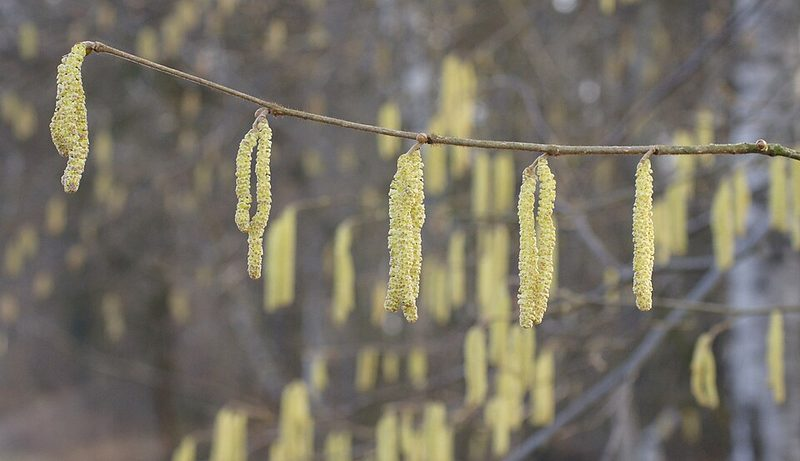
Hazel · Coll
Wisdom & Creativity · Aug 5 – Sep 1 · Ogham letter ᚉ (Coll)
Keeper of the Well of Segais, the hazel brings analytical sharpness, poetic skill, and profound clarity.
Photo: Robert Flogaus-Faust, CC BY 4.0

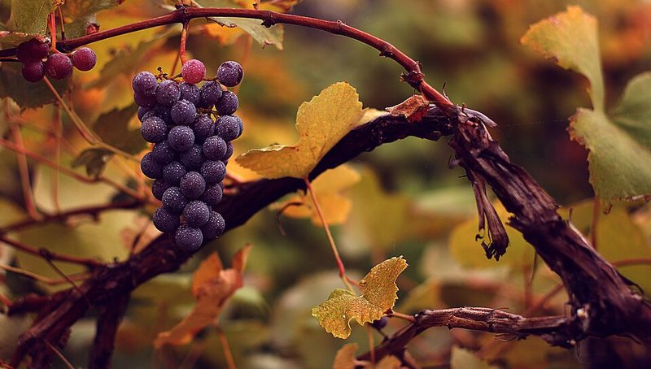
Vine · Muin
Harvest & Balance · Sep 2 – Sep 29 · Ogham letter ᚋ (Muin)
Gathering autumn fruitfulness, vine personalities orchestrate balance and sensory appreciation.
Photo: eflon (Alex from Ithaca, NY), CC BY 2.0

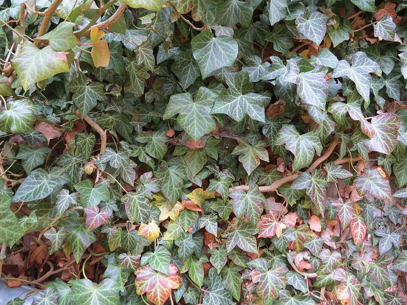
Ivy · Gort
Tenacity & Loyalty · Sep 30 – Oct 27 · Ogham letter ᚌ (Gort)
Climbing through every challenge, ivy exhibits unwavering determination and deep personal loyalty.
Photo: GT1976, CC BY-SA 4.0
_Hedera_helix_(ivy)_at_Haltgraben_in_Frankenfels.jpg){kind=link}
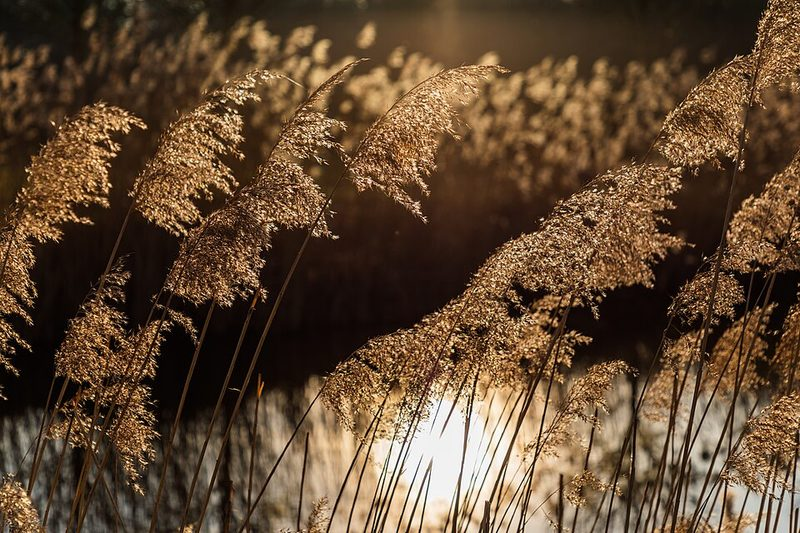
Reed · Ngetal
Truth & Expression · Oct 28 – Nov 24 · Ogham letter ᚍ (Ngetal)
Flexible yet unbreakable in winter winds, the reed digs deep into underground currents of truth.
Photo: Dietmar Rabich, CC BY-SA 4.0

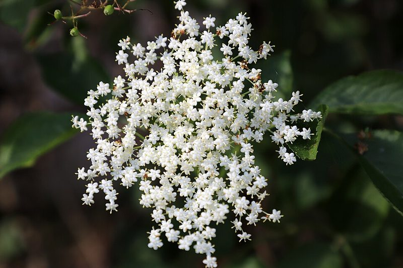
Elder · Ruis
Renewal & Cycle Transformation · Nov 25 – Dec 23 · Ogham letter ᚏ (Ruis)
The tree of cyclic completion, elder honours the quiet transformation before light returns.
Photo: W. Bulach, CC BY-SA 4.0
.jpg){kind=link}